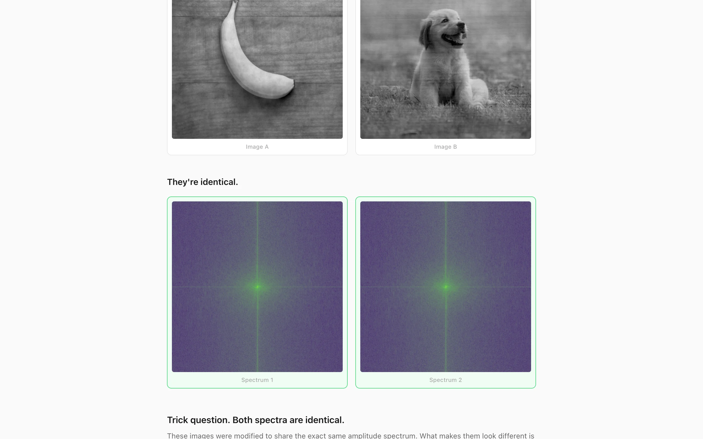
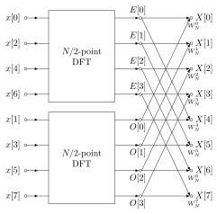

Every image has a dual life in the frequency domain. The 2D discrete Fourier transform decomposes an image into a sum of sinusoidal basis functions, each characterized by two numbers: an amplitude (how strong the component is) and a phase (where the component is shifted). The amplitude spectrum tells you which frequencies are present and at what strength. The phase spectrum tells you how those frequencies are aligned spatially. The question this project asks: which one carries the image's visual identity?
The answer is phase, and it isn't close. You can force two completely different images to share the exact same amplitude spectrum, and they will remain immediately recognizable. The amplitude spectrum is doing almost nothing for spatial structure. This project demonstrates that fact interactively: upload two images, and the algorithm iteratively converges them to a shared amplitude spectrum while preserving each image's original phase. The result is two images that look barely different from the originals but whose amplitude spectra are identical. A trick question asks you to distinguish them by their spectra. You can't.

{kind=link}
The 2D discrete Fourier transform
For an \(N \times N\) image \(f[x, y]\) with pixel values in \([0, 255]\), the 2D DFT maps the spatial domain to the frequency domain:
\[F[u, v] = \sum_{x=0}^{N-1} \sum_{y=0}^{N-1} f[x, y] \, e^{-i2\pi(ux/N + vy/N)}\]Each coefficient \(F[u, v]\) is a complex number encoding the contribution of the 2D sinusoid at spatial frequency \((u, v)\). The inverse transform recovers the original image:
\[f[x, y] = \frac{1}{N^2} \sum_{u=0}^{N-1} \sum_{v=0}^{N-1} F[u, v] \, e^{i2\pi(ux/N + vy/N)}\]The transform is separable: it factors into 1D transforms applied first to rows, then to columns. This reduces the cost from \(O(N^4)\) for naive evaluation to \(O(N^2 \log N)\) when each 1D transform uses the Cooley-Tukey FFT. The implementation applies a 1D FFT to every row of the input, producing a complex intermediate matrix, then applies a 1D FFT to every column of that matrix.
Amplitude and phase
Each complex coefficient \(F[u, v] = a + bi\) decomposes into polar form:
\[|F[u, v]| = \sqrt{a^2 + b^2}, \qquad \varphi[u, v] = \operatorname{atan2}(b, a)\]The amplitude \(|F|\) is the magnitude of the frequency component. The phase \(\varphi\) is its angular offset, ranging from \(-\pi\) to \(\pi\). To reconstruct the complex coefficient from polar form:
\[F[u, v] = |F[u, v]| \cdot e^{i\varphi[u, v]} = |F[u, v]| \bigl(\cos\varphi[u, v] + i\sin\varphi[u, v]\bigr)\]The amplitude spectrum is symmetric (for real-valued inputs it has conjugate symmetry about the origin) and varies slowly across similar images. The phase spectrum is the one that differs wildly between images. It encodes the spatial alignment of every frequency component: where edges are, where textures start and stop, how features relate to each other in space. Scramble the phase and the image becomes noise. Replace the amplitude with a flat constant and the image remains recognizable, though with altered contrast.
The algorithm
The goal is to modify two images so they converge to a shared amplitude spectrum while each retains its own phase. This is a constraint satisfaction problem with two competing requirements: (1) the amplitude spectra of both images must be equal, and (2) each image should remain close to its original appearance.
The approach is an iterative projection method inspired by the Gerchberg-Saxton algorithm, which solves phase retrieval problems by alternating projections between two constraint sets. In the original Gerchberg-Saxton formulation, the constraints are known amplitude distributions in two different domains (typically the image plane and the Fourier plane). Here, the constraints are: a shared amplitude in the frequency domain, and proximity to the originals in the spatial domain.
Given two grayscale images \(f_A\) and \(f_B\) of size \(N \times N\), the algorithm runs for \(T = 200\) iterations. At each iteration \(t\):
1. Forward transform. Compute the 2D FFT of both current images:
\[F_A^{(t)} = \mathcal{F}\{f_A^{(t)}\}, \qquad F_B^{(t)} = \mathcal{F}\{f_B^{(t)}\}\]2. Extract polar components. Decompose each spectrum into amplitude and phase:
\[\bigl(|F_A^{(t)}|,\, \varphi_A^{(t)}\bigr), \qquad \bigl(|F_B^{(t)}|,\, \varphi_B^{(t)}\bigr)\]3. Average amplitudes. The amplitude constraint is enforced by replacing both amplitudes with their mean:
\[A^{(t)}[u, v] = \frac{|F_A^{(t)}[u, v]| + |F_B^{(t)}[u, v]|}{2}\]4. Reconstruct spectra. Recombine the averaged amplitude with each image's original phase:
\[\tilde{F}_A^{(t)} = A^{(t)} \cdot e^{i\varphi_A^{(t)}}, \qquad \tilde{F}_B^{(t)} = A^{(t)} \cdot e^{i\varphi_B^{(t)}}\]5. Inverse transform. Return to the spatial domain:
\[\tilde{f}_A^{(t)} = \mathcal{F}^{-1}\{\tilde{F}_A^{(t)}\}, \qquad \tilde{f}_B^{(t)} = \mathcal{F}^{-1}\{\tilde{F}_B^{(t)}\}\]6. Blend with originals. The spatial constraint is enforced by blending the reconstructed image with the original, weighted by a decay factor \(\beta(t)\):
\[f_A^{(t+1)}[x, y] = \operatorname{clip}\!\bigl(\beta(t) \cdot f_A^{(0)}[x, y] + (1 - \beta(t)) \cdot \tilde{f}_A^{(t)}[x, y],\; [0, 255]\bigr)\]and identically for \(f_B\). The blend factor follows an exponential decay schedule:
\[\beta(t) = 0.8 \, e^{-4t/T}\]At \(t = 0\), \(\beta = 0.8\): the reconstruction is 80% original, 20% frequency-projected. This keeps the images stable during early iterations when the amplitude spectra are still far apart. By \(t = T - 1\), \(\beta \approx 0.001\): the frequency-domain constraint dominates almost entirely, and the images have converged to a shared amplitude spectrum.
Why it converges
The algorithm is an instance of alternating projections. Step 3 projects onto the set of image pairs whose amplitude spectra are equal (by averaging). Step 6 projects back toward the set of images that are close to the originals (by blending). The exponential decay of \(\beta\) gradually relaxes the spatial constraint, allowing the frequency-domain constraint to tighten.
Convergence is not guaranteed in the strict sense (the constraint sets are not convex in general, and the blend schedule is heuristic rather than derived from a convergence proof). But in practice, 200 iterations reliably produce images whose amplitude spectra match to several decimal places. The key insight is that phase is the high-entropy component. Two random images already have amplitude spectra that are more similar to each other than their phase spectra are. Averaging amplitudes is a gentle modification; preserving phase is the hard constraint, and it's satisfied by construction at every iteration.
Visualization
The raw DFT output places the zero-frequency (DC) component at \(F[0, 0]\), in the top-left corner. For visualization, this is shifted to the center of the image by the FFT shift operation, a cyclic permutation by \(N/2\) in both dimensions:
\[\text{shifted}[u, v] = F\!\left[\left(u + \frac{N}{2}\right) \bmod N,\; \left(v + \frac{N}{2}\right) \bmod N\right]\]This places low frequencies at the center and high frequencies at the edges, matching the conventional representation where distance from center corresponds to spatial frequency.
The amplitude spectrum has enormous dynamic range (the DC component is typically orders of magnitude larger than high-frequency components), so it's displayed on a log scale:
\[\text{display}[u, v] = \log\!\bigl(1 + |F[u, v]|\bigr)\]The \(\log(1 + x)\) form avoids the singularity at zero. The result is normalized to \([0, 1]\) and rendered with the viridis colormap, a perceptually uniform sequential colormap that maps low values to dark purple and high values to bright yellow. Phase is rendered with a circular twilight colormap built from phase-shifted sine waves, since phase wraps from \(-\pi\) to \(\pi\).
Why phase dominates
The perceptual dominance of phase over amplitude has been known since at least Oppenheim and Lim (1981), who showed that reconstructing an image from its phase alone (with unit amplitude) preserves the recognizable structure, while reconstructing from amplitude alone (with random phase) produces noise. The intuition is that phase encodes the relative alignment of all frequency components. Edges in an image require many frequencies to be in phase at the edge location (constructive interference). Scrambling the phase destroys this alignment, and the edge vanishes into diffuse energy spread across the image.
Amplitude, by contrast, controls the overall energy distribution across frequencies. Natural images have a characteristic amplitude spectrum that falls off roughly as \(1/f\) (the power law of natural images), and this is shared broadly across all natural photographs. Two photographs of completely different subjects have more similar amplitude spectra than you would expect, because they're both samples from the same statistical ensemble of natural scenes. Phase is what makes each image unique.
The game
The UI wraps the algorithm in a three-step reveal. After uploading two images and waiting for the 200-iteration convergence (which runs in a Web Worker to keep the main thread responsive), the app shows the modified images side by side. Then it presents the two amplitude spectra and asks: which one belongs to Image A? When you click, it reveals the trick: both spectra are identical. The phase spectra, shown below, are what actually distinguish the two images. The reveal is designed to make the mathematical fact visceral rather than abstract.
Implementation
Images are converted to grayscale using ITU-R BT.601 luminance weights:
\[Y = 0.299\,R + 0.587\,G + 0.114\,B\]and resized to the nearest power of two up to 512 pixels, since the radix-2 FFT requires power-of-two dimensions. The 2D FFT uses the row-column decomposition described above, with fft.js providing the underlying 1D Cooley-Tukey implementation. Complex numbers are stored as interleaved Float64Array pairs (real at even indices, imaginary at odd), and the algorithm transfers these arrays to and from the Web Worker using transferable objects to avoid copying. The frontend is vanilla TypeScript with Vite, deployed to GitHub Pages.